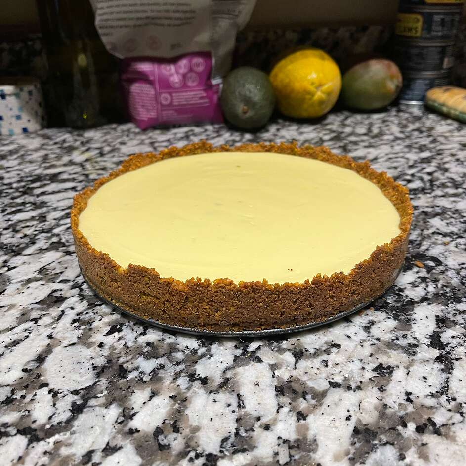

Phoenician's Key Lime Pie

Description
A delicious Key Lime Pie recipe made with fresh lime juice. Yields 8
servings.
Ingredients
- 2/3 cup toasted slivered almonds
- 1 cup graham cracker crumbs
- 1/4 cup white sugar
- 1 pinch salt
- 1/4 cup butter, melted
- 4 egg yolks
- 1 (14 ounce) can sweetened condensed milk
- 1/2 cup key lime juice
- 3/4 cup cold heavy cream
- 1/2 teaspoon grated lime zest
Steps
- Preheat an oven to 350 degrees F (175 degrees C).
- Pulse the almonds in a food processor until finely ground. Combine
the almonds with the graham cracker crumbs, sugar, and salt. Pour in
the melted butter and mix until evenly moistened. Press into a 9-inch
pie plate.
- Bake the crust in the preheated oven until golden brown, 10 to 13
minutes.
- While the crust is baking, beat the egg yolks in a bowl with the
condensed milk, cream, and lime zest. Whisk in the lime juice a
little at a time to thicken the custard. Pour the custard into the
pie crust and return to the oven.
- Bake in the oven for 15 minutes to help the custard begin to set.
Cool to room temperature on a wire rack before covering loosely with
plastic wrap and refrigerating overnight.